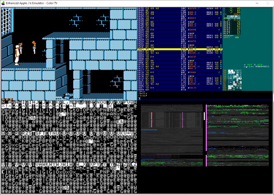

The commands G, GC and GG will run the stepping mode inside the debugger instead of exiting to the emulator.
Press F7 to stop stepping mode.
French Touch's extended debugger allows you to see more than the debugger output by using a 3-panes or 4-panes split view.
|
Command |
Effect |
|
SHOW1 |
Shows the debugger output only (default). |
|
SHOW3 |
Shows the following outputs: Emulator, Debugger and an extra monitoring pane that displays any text/graphic page you want. |
|
SHOW4 |
Shows the following outputs: Emulator, Debugger, extra monitoring, and Memory heatmap. |
In SPLIT2 or SLIT4 mode, you can monitor any additional video page.
Chose this page by typing one of the following command:
|
Command |
Description |
|
TEXT |
Resume execution until PC = StopAddress. |
|
TEXT1 |
Shows the matching video page (PAGE1). |
|
TEXT2 |
Shows the matching video page (PAGE2). |
|
TEXTX |
Shows the matching video mode. PAGE1 or PAGE2 is auto-selected based on the current NON-SELECTED page. |
In SPLIT4 mode, a memory heatmap is shown on the lower-bottom pane.
This allows to monitor all CPU access to the RAM. When 128k are emulated, both MAIN and AUX banks are displayed.
Writes are in red, reads in blue, and executions in green.
The current selected video page is shown with a white vertical bar.
The current banks access setup (read/write) is shown with red and blue vertical bars.